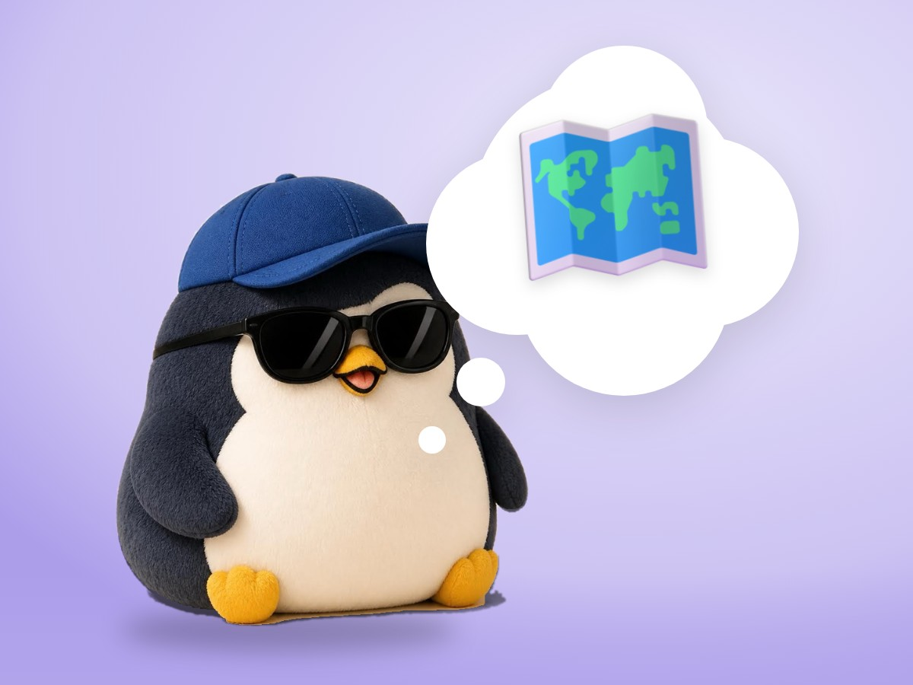

📝 DRAFT · 下書き — まだ本番に出していません · 下書き一覧
🐧 EVERYDAY LIFE⚡ 19 SEC
Strategy means finding a way to skip the fight 🗺️

The Word
The Japanese word for "strategy" is written "skip the fight."
What It Means
So it means thinking of a way to get results with as little fighting as possible.
⚡ TRY IT
Two roads to the castle
Pick a road. How much HP is left when you arrive?
❤️ HP100
The big crab is waiting on the straight road.
Walking… 🐾
You won the fight… but only 25 HP is left. So tired! 😵
You arrived with full HP. No fight at all! 🎉
⚔️ Straight road: 25 HP
🌿 Side path: 100 HP
🧭 The road with no fight gets you there with energy left.
Ask First
So before "How can I win?", I ask, "How can I skip the fight?"
Cafe Example
For example, at a popular cafe, I go in the quiet morning instead of fighting the long line.
📚 I wrote this from my notes on books and blogs I have read.